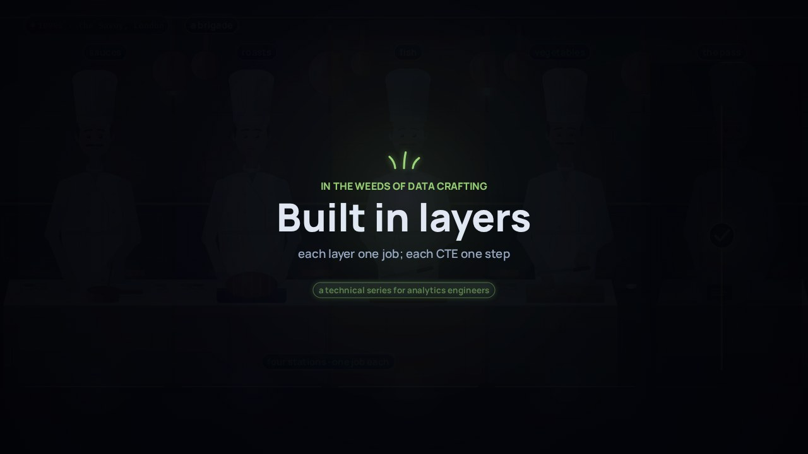
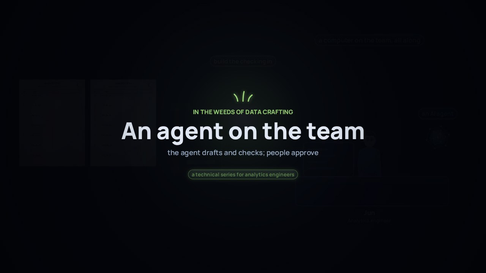

← Anterior · Película 6 de 10
Construido en capas
Cuatro capas ponen las pruebas en verde. Cada capa tiene una tarea; cada CTE, un paso; y la regla se escribe una sola vez.
Temas › En las entrañas del oficio de datos
En 1858, Australia del Sur hizo del registro del gobierno el título: cualquiera podía confiar en él, y solo su dueño podía cambiarlo. Los modelos núcleo de la credencial funcionan igual. El significado de cada hecho tiene dueño, el acceso de dbt dice quién puede construir sobre qué, los permisos dicen quién puede leer, y las claves siguen compartidas.
La película está en inglés, con subtítulos en español. Esta página, los capítulos, las preguntas, los labs y las situaciones están en español.
Amplía Construido en capas
Presiona Reproducir, o salta a un capítulo. Activa Pausa para pensar y la película se detiene con una pregunta al final de los capítulos.
Descargar el video (en inglés)Archivos de subtítulosLeer el guion (en inglés)
¿Y ahora?
Cada tarjeta de la película muestra un archivo real del proyecto de dbt de ejemplo. Abre en GitHub los que muestra cada capítulo, o ejecuta tú el proyecto entero.
sources/student_system/ sources/learning_platform/ sources/short_courses/ models/core/student/ models/core/course/ models/marts/planning/ exposures/planning/ models/marts/wallet/ exposures/wallet/ models/_groups.ymlmodels/core/student/_core_student__models.ymldbt_project.yml docs/conventions.mddbt_project.ymlexamples/planning/dependencies.yml examples/planning/models/planning_enrolments_at_census.sql examples/planning/README.mdsources/student_system/_student_system__sources.yml sources/learning_platform/_learning_platform__sources.yml sources/short_courses/_short_courses__sources.yml macros/shared/keys.sql examples/planning/README.mdmodels/_shared/_shared__decisions.yml models/marts/planning/ exposures/planning/ seeds/expected/planning/ models/marts/planning/_planning__decisions.ymlLas cuatro preguntas de Pausa para pensar, para una clase o un equipo. Abre una para ver la respuesta.
Película 7 de 10.

← Anterior · Película 6 de 10
Cuatro capas ponen las pruebas en verde. Cada capa tiene una tarea; cada CTE, un paso; y la regla se escribe una sola vez.

Siguiente · Película 8 de 10 →
Un agente de IA redacta en minutos. Sigue reglas escritas en el proyecto, muestra la consulta detrás de cada afirmación, nunca debilita una prueba, y las personas aprueban.